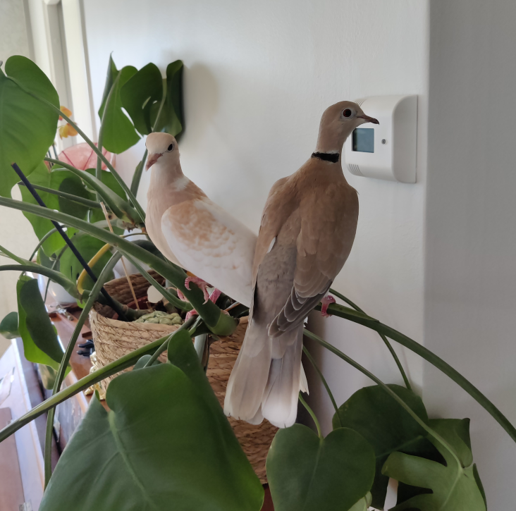

What are you doing?
This is a now page. If you have your own site, you should make one, too!
My life is often busy, and I've been somewhat secretive when sharing details with family and friends. I thought this would be a great way to keep everyone updated on what I'm currently doing. I'll do my best to keep this page updated with any new happenings. Thank you, Phillip Ridlen, for inspiring me with your now page!
This was what I was doing as of August 27 2024
This was what I was doing as of July 27 2024
This is what I am doing now
Life 🌟

I still live in the same apartment, just a few minutes from the university, along with my two ringneck doves and my roommate.
We recently experienced a flood that caused moisture damage to the floors and unfortunately our landlord has been very slow to respond, so we're still waiting on the necessary repairs. This has been very stressful. 💀
Education 🎓
This week, I began working on my master's thesis, which focuses on developing an API platform for handling gRPC requests, similar to Postman. I'm doing this project on behalf of Opera and am genuinely excited about it. I'm fortunate to have Ahmed Rezine, an Associate Professor in Computer Science, as my examiner, along with excellent supervisors from both the university and Opera. In addition to my thesis, I'm also enrolled in advanced courses in game development, security, and various internet technologies.
Work 💼
At the moment I'm not officially employed, but I've been staying busy with other responsibilities. Over the past week and continuing into the next, I'm leading a team of ten in managing the logistics for the student reception period at my university. This role involves preparing food for up to 300 people, transporting materials, setting up tents, and handling any unexpected issues that arise.
Organizations 🏢
Later this week, the board of my ethical hacking organization will meet with several cybersecurity experts and companies. We'll pitch our ideas and explore potential collaborations. The organization is expanding rapidly, with several new members and a few requests to join the board. I'm very happy about this growth!
In my role as Editor-in-Chief of LiTHanian, despite some challenges, it looks like I'll be able to put together an editorial team quite soon. I'll be holding interviews in early September, after which we'll begin working on the magazine. This Thursday, I'll visit the printing company LTAB to learn about the printing process.
Expert Progress 📈
The concept of reaching 10,000 hours to become a professional or an expert in a field is derived from Malcolm Gladwell's book "Outliers: The Story of Success" Gladwell popularized the idea that achieving a high level of proficiency in any field typically requires about 10,000 hours of dedicated practice. This notion is based on the research of psychologist Anders Ericsson, who studied the practice habits of elite performers in various domains.
I've been tracking my programming time since 2019, so these numbers are based on that data. The actual total is likely higher, considering I wrote my first program in 2012! Please note that I include this jokingly; I don't necessarily believe in the idea of becoming an expert after 10,000 hours. I haven't given it much thought, and I certainly don't feel like an expert yet.
Hobby Projects ⚙️
For me, having hobbies outside of studying and working is very important. My main hobbies are programming, photography, music, and writing.
In programming, I'm currently focused on two active projects: the Coff Programming Language, which is a reimplementation of my language Coff in Go. It's currently an interpreted language, but I plan to convert it into a compiled language. The other project is the Moonshot Kernel, a long-long-term project aimed at learning how to build various components of an operating system.


I haven't had much time for professional photography recently. I've only managed to take a few photos over the past weeks (with my phone). This is really all I have since last month.
In music, there hasn't been much progress either but I've been revisiting some old favorite albums, including "Nice, Nice, Very Nice" by Dan Mangan, "All That The Rain Promises" by Bombadil and "Shallow Grave" by The Tallest Man On Earth.
As for writing, I've been trying to keep up with blog posts. The quality varies but it's always enjoyable to write! As some of you may know, I'm also working on a book about operating systems, and I've been dedicating numerous hours to that project lately.